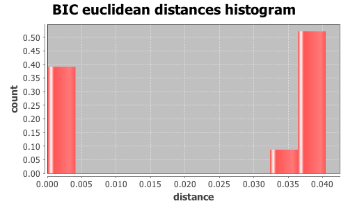

Application Meta
jModeltest 2.1
(c) 2011-onwards D. Darriba, G.L. Taboada, R. Doallo and D. Posada,(1) Department of Biochemistry, Genetics and Immunology
University of Vigo, 36310 Vigo, Spain.
(2) Department of Electronics and Systems
University of A Coruna, 15071 A Coruna, Spain.
e-mail: ddarriba@udc.es, dposada@uvigo.es
Wed Aug 26 13:04:42 EDT 2015
Mac OS X 10.10.5, arch: x86_64, bits: 64, numcores: 4
| Citation: | Darriba D, Taboada GL, Doallo R and Posada D. 2012. "jModelTest 2: more models, new heuristics and parallel computing". Nature Methods 9, 772. |
 Back to top
Back to top Settings
Arguments = -d group3/group3.txt.gene_32.phy -s 3 -i -g 4 -f -BIC -tr 7 -o group3out/g3outgene_32.txtInput Alignment: "group3/group3.txt.gene_32.phy"
NumTaxa = 17
Length = 1,485
Phyml version = 3.0
Phyml binary = PhyML_3.0_macOS_i386
Candidate models = 24
number of substitution schemes = 3
including models with equal/unequal base frequencies (+F)
including models with/without a proportion of invariable sites (+I)
including models with/without rate variation among sites (+G) (nCat = 4)
Optimized free parameters (K) = Substitution parameters + 31 branch lengths + topology
Base tree for likelihood calculations = Maximum Likelihood
Tree topology search operation = NNI
Model Optimization Results
| ID | Name | Partition | -lnL | p | fA | fC | fG | fT | ti/tv | R(a) | R(b) | R(c) | R(d) | R(e) | R(f) | p-inv | shape |
|---|---|---|---|---|---|---|---|---|---|---|---|---|---|---|---|---|---|
| 1 | JC | 000000 | 3177.3095 | 32 | - | - | - | - | - | - | - | - | - | - | - | - | - |
| 2 | JC+I | 000000 | 3170.3477 | 33 | - | - | - | - | - | - | - | - | - | - | - | 0.6120 | - |
| 3 | JC+G | 000000 | 3169.6754 | 33 | - | - | - | - | - | - | - | - | - | - | - | - | 0.3690 |
| 4 | JC+I+G | 000000 | 3169.5054 | 34 | - | - | - | - | - | - | - | - | - | - | - | 0.3330 | 0.8880 |
| 5 | F81 | 000000 | 3144.9273 | 35 | 0.2104 | 0.2491 | 0.2151 | 0.3254 | - | - | - | - | - | - | - | - | - |
| 6 | F81+I | 000000 | 3139.2077 | 36 | 0.2104 | 0.2494 | 0.2153 | 0.3250 | - | - | - | - | - | - | - | 0.5820 | - |
| 7 | F81+G | 000000 | 3138.6759 | 36 | 0.2104 | 0.2494 | 0.2153 | 0.3249 | - | - | - | - | - | - | - | - | 0.4260 |
| 8 | F81+I+G | 000000 | 3138.6020 | 37 | 0.2104 | 0.2494 | 0.2153 | 0.3249 | - | - | - | - | - | - | - | 0.3310 | 1.0650 |
| 9 | K80 | 010010 | 3133.7989 | 33 | - | - | - | - | 2.3173 | - | - | - | - | - | - | - | - |
| 10 | K80+I | 010010 | 3126.5179 | 34 | - | - | - | - | 2.3581 | - | - | - | - | - | - | 0.6210 | - |
| 11 | K80+G | 010010 | 3125.8724 | 34 | - | - | - | - | 2.3572 | - | - | - | - | - | - | - | 0.3500 |
| 12 | K80+I+G | 010010 | 3125.6850 | 35 | - | - | - | - | 2.3600 | - | - | - | - | - | - | 0.3120 | 0.7790 |
| 13 | HKY | 010010 | 3104.1641 | 36 | 0.2127 | 0.2457 | 0.2180 | 0.3237 | 2.2789 | - | - | - | - | - | - | - | - |
| 14 | HKY+I | 010010 | 3098.1207 | 37 | 0.2123 | 0.2465 | 0.2180 | 0.3232 | 2.3223 | - | - | - | - | - | - | 0.5930 | - |
| 15 | HKY+G | 010010 | 3097.6087 | 37 | 0.2122 | 0.2465 | 0.2181 | 0.3232 | 2.3228 | - | - | - | - | - | - | - | 0.4000 |
| 16 | HKY+I+G | 010010 | 3097.5170 | 38 | 0.2122 | 0.2466 | 0.2181 | 0.3232 | 2.3251 | - | - | - | - | - | - | 0.2860 | 0.8460 |
| 17 | SYM | 012345 | 3131.2954 | 37 | - | - | - | - | - | 1.1882 | 7.7131 | 1.9674 | 1.6577 | 6.0186 | 1.0000 | - | - |
| 18 | SYM+I | 012345 | 3124.1035 | 38 | - | - | - | - | - | 1.1500 | 7.7493 | 2.0297 | 1.5764 | 6.0707 | 1.0000 | 0.6190 | - |
| 19 | SYM+G | 012345 | 3123.4562 | 38 | - | - | - | - | - | 1.1538 | 7.7440 | 2.0329 | 1.5765 | 6.0823 | 1.0000 | - | 0.3540 |
| 20 | SYM+I+G | 012345 | 3123.2739 | 39 | - | - | - | - | - | 1.1525 | 7.7435 | 2.0384 | 1.5698 | 6.0882 | 1.0000 | 0.3070 | 0.7760 |
| 21 | GTR | 012345 | 3098.3799 | 40 | 0.2072 | 0.2498 | 0.2143 | 0.3287 | - | 1.3681 | 9.5360 | 2.0176 | 1.8673 | 5.3984 | 1.0000 | - | - |
| 22 | GTR+I | 012345 | 3092.5024 | 41 | 0.2067 | 0.2504 | 0.2147 | 0.3282 | - | 1.3700 | 9.8296 | 2.0986 | 1.8280 | 5.4591 | 1.0000 | 0.5870 | - |
| 23 | GTR+G | 012345 | 3091.9957 | 41 | 0.2066 | 0.2505 | 0.2148 | 0.3281 | - | 1.3725 | 9.8247 | 2.1035 | 1.8226 | 5.4611 | 1.0000 | - | 0.4130 |
| 24 | GTR+I+G | 012345 | 3091.9178 | 42 | 0.2066 | 0.2505 | 0.2148 | 0.3281 | - | 1.3755 | 9.8517 | 2.1105 | 1.8228 | 5.4698 | 1.0000 | 0.2170 | 0.7090 |
There are 3 different topologies. The following table shows the models supporting each topology and the rank according to each Information Criterion, as well as Robinson-Foulds and Euclidean distances with the tree of the best-fit model.
| ID | Models | Topology | AIC | BIC | AICc | DT | |
|---|---|---|---|---|---|---|---|
| 0 |
F81 F81+I F81+G HKY HKY+I HKY+G GTR GTR+I GTR+G GTR+I+G
|
RANK | - | 0 | - | - | |
| Weight | - | 0.9831 | - | - | |||
| RF | - | 0 | - | - | |||
| AVG Distance | - | 5.1908e-04 | - | - | |||
| Distance VAR | - | 2.8927e-07 | - | - | |||
| 1 |
JC JC+I JC+G JC+I+G K80 K80+I K80+G K80+I+G SYM SYM+I SYM+G SYM+I+G
|
RANK | - | 1 | - | - | |
| Weight | - | 0.0000 | - | - | |||
| RF | - | 4 | - | - | |||
| AVG Distance | - | 3.9906e-02 | - | - | |||
| Distance VAR | - | 2.0287e-07 | - | - | |||
| 2 |
F81+I+G HKY+I+G
|
RANK | - | 2 | - | - | |
| Weight | - | 0.0169 | - | - | |||
| RF | - | 4 | - | - | |||
| AVG Distance | - | 3.4094e-02 | - | - | |||
| Distance VAR | - | 1.9599e-08 | - | - |
BIC Selection Results
Model selected
| Model | HKY+G | ||
|---|---|---|---|
| partition | 010010 | ||
| -lnL | 3097.6087 | ||
| K | 37 | ||
| freqA | 0.2122 | R(a) | - |
| freqC | 0.2465 | R(b) | - |
| freqG | 0.2181 | R(c) | - |
| freqT | 0.3232 | R(d) | - |
| ti/tv | 2.3228 | R(e) | - |
| R(f) | - | ||
| p-inv | - | gamma | 0.4000 |
Best model tree
(((((I0144:0.00202379,(((I0149:0.00269870,(I0119:0.00888984,(((I0111:0.02957233,I0158:0.00420981):0.00193651,(I0076:0.00203173,I0075:0.00546438):0.00198162):0.00140529,(I0151:0.00475302,I0150:0.00134795):0.00000012):0.00067254):0.00000006):0.00067309,I0152:0.00135750):0.00000005,I0148:0.00543132):0.00000008):0.00067520,(I0127:0.00823766,I0147:0.00822866):0.00066779):0.00066260,I0135:0.00409336):0.00273445,I0141:0.00476283):0.00111995,I0068:0.00225413,I0067:0.00076480);
Display best model tree in PhyloWidget
| Model | -lnL | K | BIC | delta | weight | cumWeight |
|---|---|---|---|---|---|---|
| HKY+G | 3097.6087 | 37 | 6465.4347 | 0.0000 | 0.5943 | 0.5943 |
| HKY+I | 3098.1207 | 37 | 6466.4588 | 1.0241 | 0.3561 | 0.9504 |
| HKY | 3104.1641 | 36 | 6471.2424 | 5.8077 | 0.0326 | 0.9830 |
| HKY+I+G | 3097.5170 | 38 | 6472.5544 | 7.1198 | 0.0169 | 0.9999 |
| GTR+G | 3091.9957 | 41 | 6483.4214 | 17.9867 | 0.0001 | 0.9999 |
| GTR+I | 3092.5024 | 41 | 6484.4348 | 19.0002 | 0.0000 | 1.0000 |
| GTR | 3098.3799 | 40 | 6488.8866 | 23.4520 | 0.0000 | 1.0000 |
| GTR+I+G | 3091.9178 | 42 | 6490.5688 | 25.1342 | 0.0000 | 1.0000 |
| K80+G | 3125.8724 | 34 | 6500.0526 | 34.6179 | 0.0000 | 1.0000 |
| K80+I | 3126.5179 | 34 | 6501.3437 | 35.9090 | 0.0000 | 1.0000 |
| K80+I+G | 3125.6850 | 35 | 6506.9809 | 41.5463 | 0.0000 | 1.0000 |
| K80 | 3133.7989 | 33 | 6508.6025 | 43.1678 | 0.0000 | 1.0000 |
| SYM+G | 3123.4562 | 38 | 6524.4329 | 58.9983 | 0.0000 | 1.0000 |
| SYM+I | 3124.1035 | 38 | 6525.7274 | 60.2927 | 0.0000 | 1.0000 |
| SYM+I+G | 3123.2739 | 39 | 6531.3714 | 65.9367 | 0.0000 | 1.0000 |
| SYM | 3131.2954 | 37 | 6532.8081 | 67.3734 | 0.0000 | 1.0000 |
| F81+G | 3138.6759 | 36 | 6540.2659 | 74.8312 | 0.0000 | 1.0000 |
| F81+I | 3139.2077 | 36 | 6541.3296 | 75.8949 | 0.0000 | 1.0000 |
| F81 | 3144.9273 | 35 | 6545.4656 | 80.0310 | 0.0000 | 1.0000 |
| F81+I+G | 3138.6020 | 37 | 6547.4213 | 81.9867 | 0.0000 | 1.0000 |
| JC+G | 3169.6754 | 33 | 6580.3553 | 114.9207 | 0.0000 | 1.0000 |
| JC+I | 3170.3477 | 33 | 6581.7001 | 116.2654 | 0.0000 | 1.0000 |
| JC+I+G | 3169.5054 | 34 | 6587.3186 | 121.8839 | 0.0000 | 1.0000 |
| JC | 3177.3095 | 32 | 6588.3204 | 122.8857 | 0.0000 | 1.0000 |
| -lnL: | negative log likelihod |
| K: | number of estimated parameters |
| BIC: | Bayesian Information Criterion |
| delta: | BIC difference |
| weight: | BIC weight |
| cumWeight: | cumulative BIC weight |
Confidence interval
There are 24 models in the 100.00% confidence interval:
HKY+G HKY+I HKY HKY+I+G GTR+G GTR+I GTR GTR+I+G K80+G K80+I K80+I+G K80 SYM+G SYM+I SYM+I+G SYM F81+G F81+I F81 F81+I+G JC+G JC+I JC+I+G JC

Euclidean distances histogram from each model optimized tree to HKY+G tree.
Euclidean distances histogram from each model optimized tree to HKY+G tree.
Robinson-Foulds distances histogram from the different topologies to HKY+G topology.